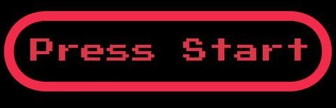

UNDERTALE
Sobre
Lore
Jogo
Contato
No subsolo, monstros a encontrar,
Frisk escolhe entre lutar ou amar,
Em Undertale, cada escolha faz pesar.
Sans com piadas, Papyrus a sonhar,
Asgore e Toriel, destinos a traçar,
O coração decide, quem vai se salvar.
